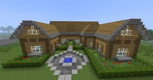
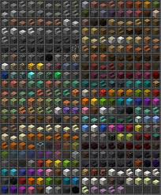
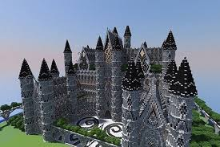
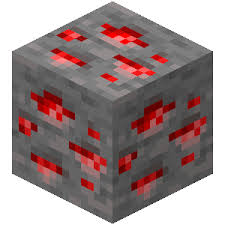
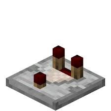
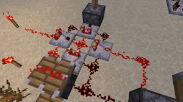

Créatif

Dans ce mode du jeu,le joueur est invincible,peut voler pour atteindre des zones complexes ou construire dans les airs,n'a pas besoin de manger et a accès à toute les ressources en illimité.
Il n'y a pas a proprement parler de but si ce n'est de construire absolument tout ce qu'on a envie que ce soit une simple maison ou un immense château,les possibilités sont vraiment infini et résident dans votre imagination.

Le joueur peut aussi développer des machines complexes à bases de redstone.La redstone est à minecraft ce qu'est l'éléctricité au monde irl (in real life).
Grâce a la redstone,le joueur peut bâtir des constructions mécaniques,des ascenseurs,des pièges,des chemins de fers etc...
Top 5 des constructions les plus avancées à base de redstone


